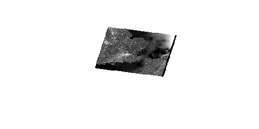

MS RFC 96: Time Dimension Support in MapCache Tilesets¶
- Date:
2013/04/04
- Author:
Thomas Bonfort
- Contact:
- Author:
Stephan Meißl
- Contact:
- Status:
Adopted
- Version:
MapCache 1.2
1. Overview¶
This RFC proposes to add time dimension support in MapCache. This allows MapCache to answer WMTS and WMS requests including in the TIME parameter both timestamps or time intervals.
One of the motivating use cases is to efficiently serve potentially big archives of Earth Observation data via WMTS and WMS. Only one layer per sensor or satellite needs to be configured and single acquisitions can still be selected using the time of acquisition in the TIME parameter:
...&TIME=2010-07-22T10:16:01Z&...

In the same way it is also possible to view all acquisitions within a given time interval:
...&TIME=2010-07/2010-08&...
For service providers it is additionally important to be able to add new acquisitions to the cache as they become available at the configured source without the need to restart the web server.
2. Proposed solution¶
To obtain the behavior detailed in the previous paragraph, MapCache needs to be extended to support the notion of timestamps for a given tileset:
A database of some sort is used to query the available timestamps for a tileset. The actual population of this database is not managed by mapcache, and is left to the server administrator whenever a new timestamp is added to the source data.
Given an incoming request with a specified TIME=xxx component, MapCache must be able to query the said database to extract the individual timestamp entries. Once the timestamps have been extracted, processing consists in vertically assembling the tiles corresponding to the individual timestamps in order to return a single composited tile to the client.
Note
This functionality will only be activated and usable for WMS and WMTS requests. Other specifications do not provision the usage of dimensions.
2.1 Example¶
Suppose that the database given for a tileset contains the timestamps 2011-12-15, 2012-01-15, and 2012-02-15, i.e. there are three different datasets that where captured on the 15th of December, January and February.
For a request containing the time dimension TIME=2012, these are the steps that are accomplished:
The database is queried for timestamps that span 2012-01-01 to 2012-12-31. The database returns the two valid timestamps 2012-01-15 and 2012-02-15
Mapcache creates a request that will ask for the vertical merging of the tileset with two different TIME dimensions
Mapcache queries the cache for the tile with the 2012-01-15 dimension. If the tile is not found in the cache, the <source> renders the given metatile having been passed a TIME=2012-01-15 URL parameter.
Mapcache queries the cache for the tile with the 2012-02-15 dimension.
Mapcache assembles these two tiles
Mapcache returns a single tile to the client, consisting of the vertical assembly of the two tiles, and therefore containing the data of the 2012 time series.
2.2 Storing and Retrieving Timestamp entries¶
While the available timestamps for a tileset could be supplied in the mapcache.xml configuration file, for the dynamic case where datasets are added regularly this would not be practical as it would require a server restart.
The initial implementation will query a sqlite database for the available timestamps given a time interval. Additional database backends may be added in the future, the code is written with the traditional mapcache struct inheritance that allows for future extensibility.
In order to remain generic, there is no enforcement on the schema of the provided sqlite database, it is up to the mapcache administrator to:
Provide the path to the sqlite file that should be used for a given tileset
Provide the sqlite query that should be run in order to obtain the individual timestamps given a time interval. Mapcache will use this query on the sqlite database, after having binded one or more of the :tileset, :start_timestamp, :end_timestamp values given the current request.
An example configuration entry is provided here:
<timedimension type="sqlite" default="2010">
<dbfile>/path/to/mapcache-time.sqlite</dbfile>
<query>
select
strftime('%Y-%m-%dT%H:%M:%SZ',start_time)||'/'||strftime('%Y-%m-%dT%H:%M:%SZ',end_time)
from
time
where
source_id=:tileset
and
start_time>=datetime(:start_timestamp,'unixepoch')
and
end_time<=datetime(:end_timestamp,'unixepoch')
order by
end_time
</query>
</timedimension>
Note
It is up to the mapcache administrator to provide a sqlite query that correctly interprets the start_time and end_time values, and that returns a timestamp in a textual form that can be directly interpreted by the tileset’s source WMS after having been passed in a TIME=xxx URL parameter in the GetMap request.
2.3 Interpreting Time formats¶
MapCache will accept requests with a TIME dimension that follows one of these two formats:
TIME=<timestamp>, e.g. TIME=2012-01-01
TIME=<timestamp_start>/<timestamp_end>, e.g. TIME=2012-01-01/2012-12-31
The format for <timestamp> respects ISO 8601:2000 “extended” format: up to 14 digits specifying century, year, month, day, hour, minute, and seconds with non-numeric characters to separate each piece:
ccyy-mm-ddThh:mm:ssZ
A <timestamp> may be abbreviated to lower resolutions, mapcache will understand timestamps of the following formats:
%Y-%m-%dT%H:%M:%SZ (finest resolution)
%Y-%m-%dT%H:%MZ (all timestamp for a given minute)
%Y-%m-%dT%HZ (all timestamps for a given hour)
%Y-%m-%d (all timestamps for a given day)
%Y-%m (all timestamps for a given month)
%Y (all timestamps for a given year)
Warning
ISO8601:2000 allows time resolutions down to the millisecond, i.e. ccyy-mm-ddThh:mm:ss.sssZ. These are not supported by mapcache at the time being.
Warning
ISO8601:2000 allows timezones to be specified as the last letter of the timestamp. This is not supported by mapcache, who expects timestamps in UTC (suffix Z, zulu)
Warning
The OGC WMS spec allows lists of timestamps or intervals to be specified. These are not supported by mapcache at the time being.
Warning
The OGC WMS spec allows a resolution to be added to the end of a time interval, e.g. TIME=2012-01-01/2012-02-01/P1D. It is ignored by mapcache as it does not make any sense in this current setup.
A new function will be added, using strptime, that will compute a time interval given a TIME dimension provided in the request URL.
To summarize, here is the full list of valid timestamps for mapcache:
2012
2012-01
2012-01-01
2012-01-01T12Z
2012-01-01T12:01Z
2012-01-01T12:01:01Z
Here is an example list of valid TIME url parameters, where the timestamps can also be used in intervals (the resolution does not need to match, although doing so is recommended), for example:
TIME=2012
TIME=2012-01-01
TIME=2012-01-01T12Z
TIME=2012/2013
TIME=2012-01-01T12Z/2012-01-02T12Z
TIME=2012/2013-01-02T12Z (not recommended)
Warning
The OGC WMTS spec does not allow intervals to be specified for the TIME dimension. MapCache will however interpret intervals in its KVP interface, but these cannot be supported by the REST interface (due to the presence of ‘/’s which are ambiguous).
2.4 Handling Incomplete Tilesets for a given Timestamp¶
Though not strictly related to this RFC, the TIME dimension support in mapcache will support tilesets spanning different extents depending on the timestamp. If the tileset is set to <readonly>, a missing tile from the cache for a given timestamp will not result in an error or be requested from the <source>, but will be regarded as “empty”.
To put this in context, a satellite run corresponds to a specific time(stamp|interval), and spans a limited area on the globe. There is no need to seed|generate the tiles outside of the extents spanned by this run, however it is still possible to request a mosaic compositing all of the satellite runs for a given (larger) time interval.
3. Implementation Details¶
3.1 Overview¶
A struct representing a TIME database will be added, and be sub-classed by a sqlite specific implementation.
typedef enum {
MAPCACHE_TIMEDIMENSION_ASSEMBLY_STACK,
MAPCACHE_TIMEDIMENSION_ASSEMBLY_ANIMATE /* for future use */
} mapcache_timedimension_assembly_type;
typedef enum {
MAPCACHE_TIMEDIMENSION_SOURCE_SQLITE
/* for future use */
} mapcache_timedimension_source_type;
apr_array_header_t* mapcache_timedimension_get_entries_for_value(
mapcache_context *ctx,
mapcache_timedimension *timedimension,
mapcache_tileset *tileset,
const char *value
);
struct mapcache_timedimension {
mapcache_timedimension_assembly_type assembly_type; /* for future use */
void (*configuration_parse_xml)(
mapcache_context *context,
mapcache_timedimension *dim,
ezxml_t node);
apr_array_header_t* (*get_entries_for_interval)(
mapcache_context *ctx,
mapcache_timedimension *dim,
mapcache_tileset *tileset,
time_t start,
time_t end);
apr_array_header_t* (*get_all_entries)(
mapcache_context *ctx,
mapcache_timedimension *dim,
mapcache_tileset *tileset);
char *default_value;
char *key;
};
struct mapcache_timedimension_sqlite {
mapcache_timedimension timedimension;
char *dbfile;
char *query;
};
The structs present two public functions, one to get all valid values (in order to construct capabilities documents and demo interface), and another returning valid timestamps for a given interval.
3.2 Files affected¶
mapcache.h
configuration_xml.c (parser)
dimension.c (sqlite timestamp extraction)
service_demo.c (add valid timestamps to demo interface)
service_wms.c, service_wmts.c (URL parameter parsing, timestamp database querying)
tileset.c (cloning and creation functions)
mapcache_seed.c (timestamp specification when seeding)
3.3 Backwards Compatibility Issues¶
None expected, new functionality
4. Performance implications¶
When supplying a TIME range in the request URL that corresponds to a large number of time entries from the database, the corresponding operation in mapcache can become computationally heavy as there will be numerous image tiles to fetch, decode and merge into the finally produced image. While this might lead to a denial of service on the mapcache server, it is considered normal behavior in order to supply correct results. Server administrators can mitigate this load by adding a ORDER BY ttt LIMIT xxx clause in their sqlite queries, at the cost of responses that will be missing entries.
5. Bug ID¶
62: pull62
6. Voting history¶
+1 from ThomasB, MikeS, TomK, JeffM, DanielM, SteveW, OlivierC, SteveL and PerryN